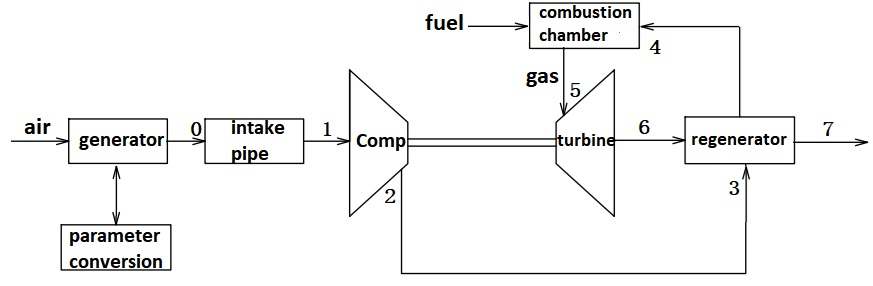

|
 |
Biography
I'm a master student in School of Energy and Power Engineering, Beihang University.Professional direction is aircraft engine overall / component simulation and testing. My advisor is Prof. Hongwei Ma . I got Bachelor degree from Department of Aerospace and Construction Engineering, Harbin engineering University. Major in Fluid and pneumatic，My GPA is 3.53/4.
Publications
|  | Research on modeling and simulation of micro-gas turbine engine based on MATLAB |
||
|
A pressure comb probe with a blowing strut structure |
||
|
A temperature comb probe with a suction strut structure Hongwei Ma , Yafei Zhong Chinese Patent,No.201710317339.8 |
||
|
A pressure comb probe with a suction strut structure Hongwei Ma , Yafei Zhong Chinese Patent,No.201710317869.2 |
||
|
A temperature comb probe with a blowing strut structure Hongwei Ma , Yafei Zhong Chinese Patent,No. 201710317349.1 |
||
|
A pressure probe with a blowing strut structure |
||
|
A temperature probe with a blowing strut structure Hongwei Ma , Yafei Zhong Chinese Patent,No. 201710398122.4 |
||
|
A pressure probe with a suction strut structure Hongwei Ma , Yafei Zhong Chinese Patent,No.201710476267.1 |
||
|
A temperature probe with a suction strut structure Hongwei Ma , Yafei Zhong Chinese Patent,No.201710480065.4 |
||
A four-hole pressure airfoil probe |
|||
A three-hole pressure airfoil probe |
|||
| A five-hole pressure airfoil probe Hongwei Ma ,Chao Jin, Yafei Zhong Chinese Patent,No.201710196175.8 |
|||
| A integral shaped composite triangle frame and the preparation method Jianhua Zhang ,Chengyu Guan, Yafei Zhong Chinese Patent,No.2018062602350640 |
|||


- Study on the interference of the compressor flow field by inhaling through probe support rod (Master's project)
- Overall design of micro gas turbine and component simulation calculation (Enterprise project,Project leader)
- Design and test of one water flow field test rig (Enterprise project,Important participant)
- Helped mentor guide Two undergraduates
- Teaching assistant of Experimental courses:“Flow Field Display Experiment”,“PIV Experiment”
- Postgraduate National Scholarship (13/810), Beihang University,2018
- National Inspirational Scholarship(Top 10%),Harbin Engineering University,2015
- National Inspirational Scholarship(Top 10%), Harbin Engineering University,2014
- The fist award prize in the seventh Super Light Green Composite Bridge Student Content ,Harbin Engineering University,2015
- National innovation training program for university students ,Harbin Engineering University,2014
- The third award prize in the National Mathematics Competition for College Students ,Harbin Engineering University,2014
Miscellaneous
Hobbies: Basketball, Soccer,Billiards,Communicating with others.